종교
타락교·혈교와 타락 과정 기록은 기록면 버튼을 눌러 본다.
타락교
타락교
Corrupted Cult
타락교는 암흑기에 흩어진 종파들이 이어져 생긴 오염 신앙의 한 갈래로 추정된다. 그동안 누가 이끌어 왔는지는 확인되지 않았다. 지금은 여러 나라에 숨어들어 사회를 안에서부터 갉아먹는다.
저주와 몸이 변하는 것을 축복으로 받아들인다. 불멸을 신앙의 증거로 삼는다. 신자 한 사람 한 사람이 실제 위협이다. 평범한 사회 안에 비밀 조직으로 남아 있다.
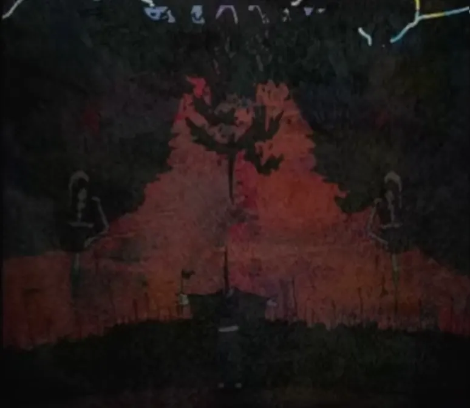
신원불명의 신자
Unidentified Believer
현장에서 가장 흔히 확인되는 타락교의 낮은 계급 신자다. 겉모습은 사람과 비슷하다. 하지만 몸속과 행동은 이미 오염이 시작된 경우가 많다.
신선한 살을 먹은 뒤 모습이 잠시 안정되는 사례가 보고됐다. 먼저 조심할 것은 몇몇이 무리 지어 움직이는 것과 몰래 다가오는 것이다.
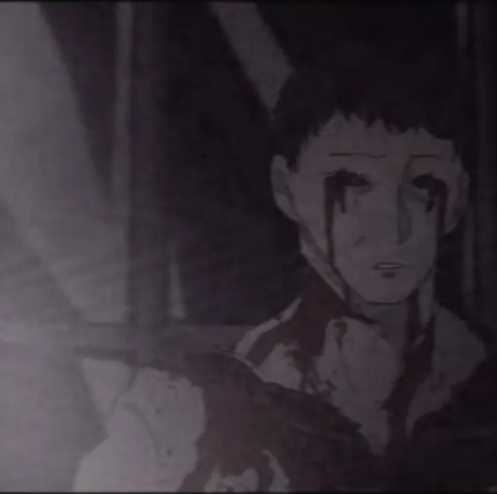
가면을 쓴 존재
Masked Entity
타락교 의식장 주변에서 되풀이해 목격되는 특수 개체다. 야생 동물이 변한 것으로 추정된다. 일부 신자들은 이 개체를 성스러운 물건처럼 지킨다.
맞붙어 싸우기 전에 정신 오염과 추적 실패가 먼저 온다. 의식장 한가운데에서 발견되면 바로 봉쇄 등급을 올린다.
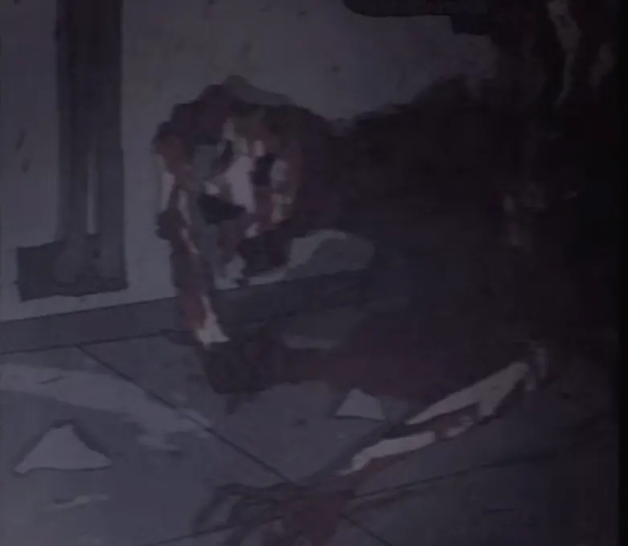
타락의 과정 및 형태
Corruption Process
살의 길을 거듭 쓰면 침묵성 타락이 시작된다. 늦게 오기도 하고 빨리 오기도 한다. 몸 곳곳에서 새 기관과 덩어리가 자라난다. 날카로운 이가 난 입과 감각 기관이 함께 생기는 경우가 많다.
현실감을 잃고 인격도 함께 사라져 간다. 심하면 피해자는 제 몸을 먹어 치우는 자가포식 단계로 넘어간다.
자가포식으로 이어질 수 있음
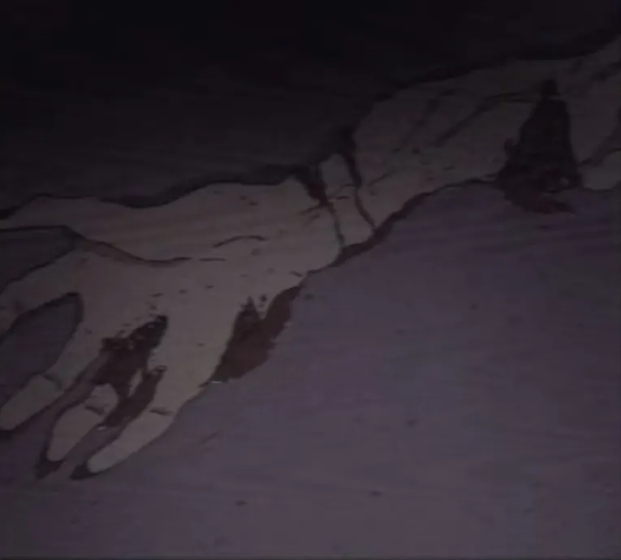
침묵성 타락
Silent Corruption
빙의되지 않았는데도 피해자 몸 안에서 오염이 자라는 경우다. 처음에는 멀쩡해 보인다. 통증과 무기력, 이상한 조직이 자라는 것이 뒤늦게 드러난다.
학교와 집 안에서 나오는 사례가 늘고 있다. 늦게 발견할수록 회복할 가능성은 빠르게 낮아진다.
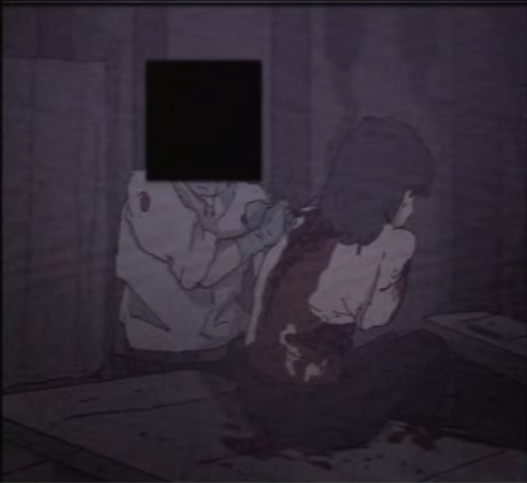
융합성 타락
Hybridized Corruption
보통의 타락은 대개 되돌릴 수 없다. 피해자는 타락 생명체로 바뀐다. 그러나 일부 교단은 의식을 치러 융합 과정을 억지로 일으킨다. 타락을 피해자 몸 안에 합쳐 넣는 과정이다.
사람의 자아와 타락 조직이 한 몸에 함께 남아 있을 수 있다. 겉모습은 일부만 바뀐다. 그래서 늦게 발견되는 경우가 많다.
일부 기록은 평범한 설명문처럼 시작했다가 갑자기 교단의 안내문으로 뒤바뀐다. 이런 기록은 정보 오염이나 의식이 끼어든 흔적으로 분류한다.
당신의 행동에 책임을 지십시오
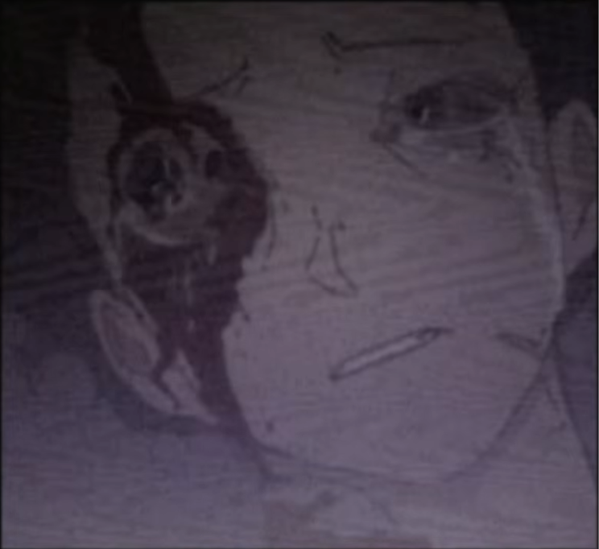
혈교
혈교
Blood Cult
오래된 피 의식 전통에서 갈라진 분파다. 타락한 몸보다 피의 뜻과 피가 흐르는 길을 더 중요하게 여긴다.
혈교는 피를 목숨을 잇는 물질로 보지 않는다. 문과 무기, 길과 저장소를 여는 수단으로 다룬다. 피의 길을 쓴다고 바로 타락하지는 않는다. 다만 지나치게 쓰면 피를 많이 흘리고 탈수가 온다.
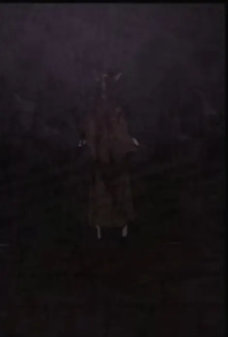
혈액 이동 경로 조정
Blood Route Control
혈액 사용자들은 몸 안팎의 피가 흐르는 길을 틀어 싸움의 흐름을 바꾼다. 출혈을 다스리고 피를 굳히는 일을 동시에 할 수 있다. 이 힘은 방어막을 치거나 그 자리에서 무기를 만드는 데 쓰인다.
싸움이 길어질수록 사용자는 체력을 많이 쓴다. 잃은 피가 쌓이면 조작이 부정확해진다. 급성 탈수 증상이 뒤따른다.
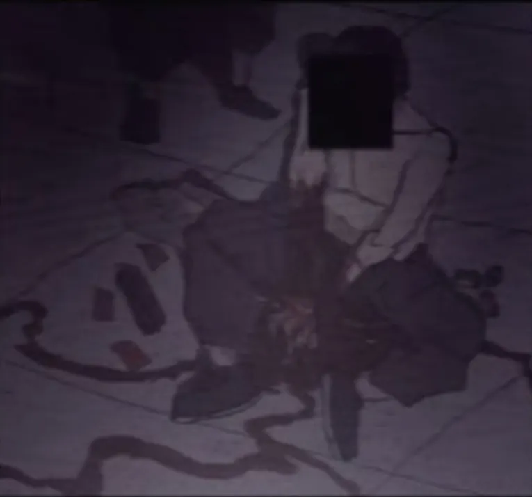
혈무의 제작 과정
혈무 Creation
이미 있는 근접 무기에 피를 덮고, 피의 의식으로 고정한다. 그렇게 만든 의식 무기가 혈무다.
다 만든 혈무는 보통 무기보다 오래 버틴다. 타락 조직을 자르고, 다시 자라나는 것을 늦추는 데 쓴다.
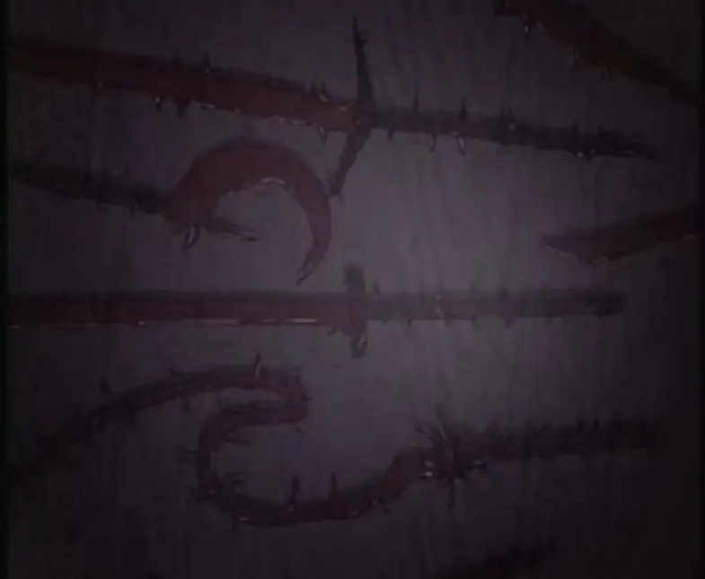
피의 호수를 거니는 자들
Walking Through the Lake of Blood
피 웅덩이는 피를 모아 두는 곳이자 지나다니는 길로 쓰인다. 혈교 신자는 수면 아래에 숨어 움직이거나 매복할 수 있다.
현장 인원은 이것을 흔한 핏자국으로 여기지 않는다. 다가가기 전에 고열 장비와 밀폐 회수 절차를 준비한다.
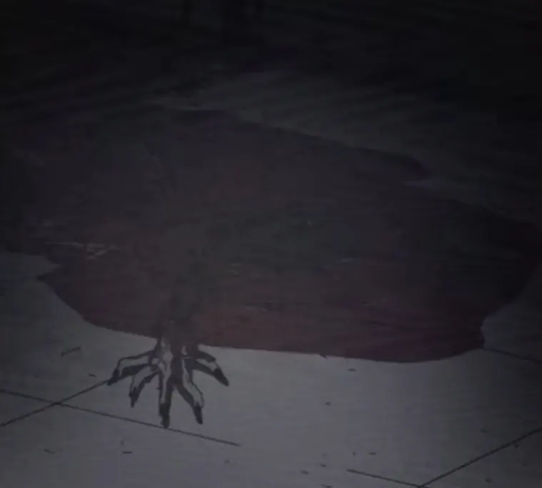
혈액 저장소
Blood Reservoir
안에 많은 피가 담겨 있다. 혈교 사용자들은 이 피로 싸우는 도중 몸을 회복하거나 의식에 쓸 피를 댄다.
직접 만지는 것은 금지된다. 열기 전에 오염 수치를 확인하고, 밀폐 반출 절차를 밟는다.
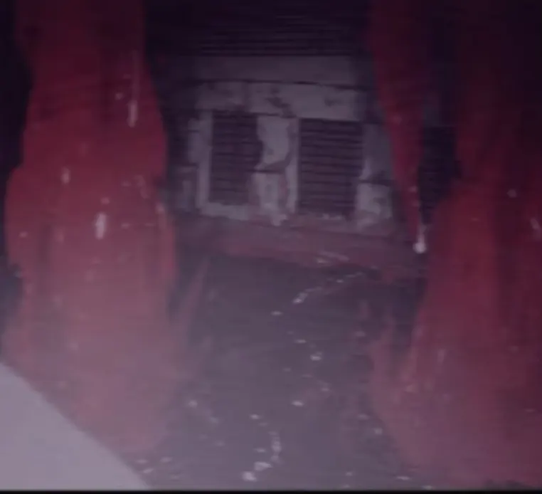
제압된 타락체
Suppressed Corrupted Entity
혈무와 불을 함께 쓰면 제압이 잘 된다. 타락체가 다시 자라나거나 모습을 바꾸는 것을 막는다.
자른 뒤에는 바로 태우거나 피가 흐르는 길을 막는다. 그래야 재생을 확실히 끊을 수 있다. 봉인구와 회수 절차는 반드시 함께 쓴다.
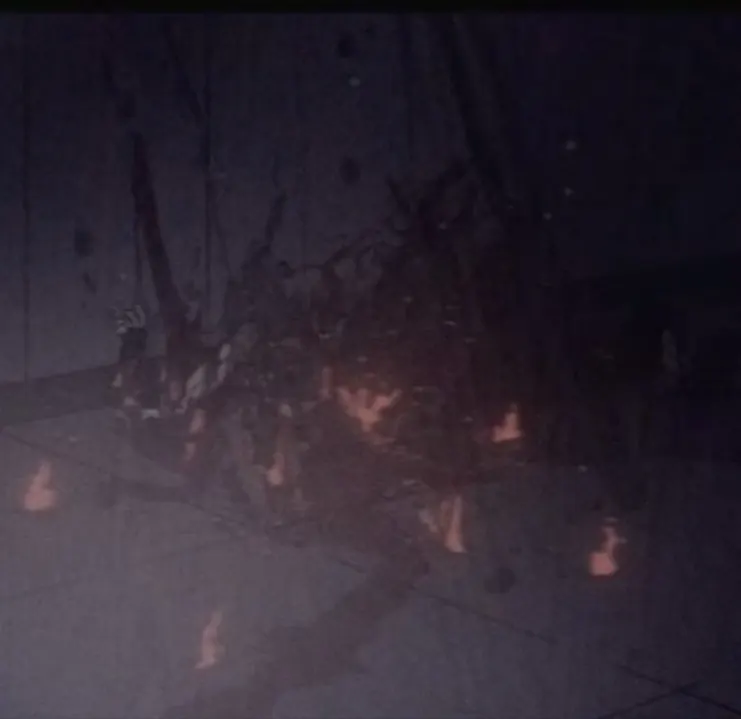
타락교와 혈교 비교
비교 기록
- 타락교는 정신·육체 오염과 불멸성 숭배에 무게를 둔다.
- 혈교는 피의 길, 피를 매개로 쓰는 술법, 저장소 관리에 무게를 둔다.
- 타락교의 가장 큰 위협은 숨은 오염과, 사람이 타락 개체로 바뀌는 개체화다.
- 혈교의 가장 큰 위협은 피를 무기로 쓰는 것과 피가 흐르는 길을 조작하는 것이다.
- 두 갈래 모두 우시노다교 통합 위협으로 묶어 관리한다.
현장 대응 경고
작전 지침
사람 모습을 하고 있든 아니든, 타락교 신자는 언제든 위협이 될 수 있다고 본다. 혈교가 남긴 피 웅덩이와 저장소는 동시에 길이자 덫이자 공격 수단이 될 수 있다.
- 단독 접근 금지
- N.H.C 또는 S.I.D 동행 필수
- 의식장 발견 시 현장 봉쇄 우선
- 회수 절차는 봉인 인원 승인 후 진행